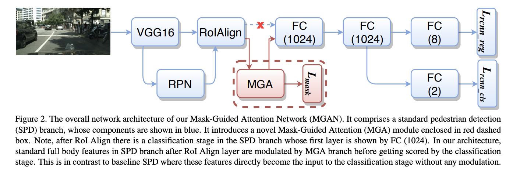
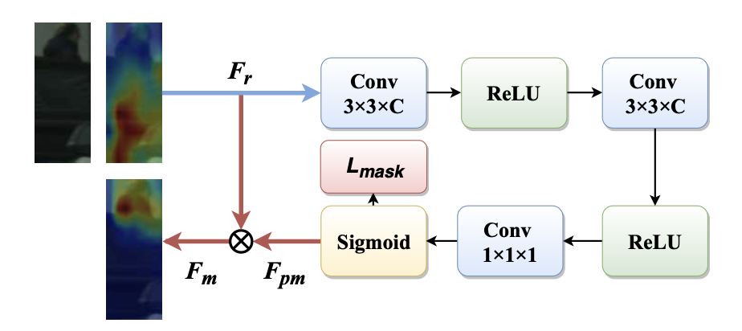

Mask-Guided Attention Network for Occluded Pedestrian Detection
URL:https://arxiv.org/pdf/1901.06651.pdf
行人检测的一篇论文，用attention的方式解遮挡问题(这一类方法的确很多…而且做法很类似…), 这篇论文能中ICCV2019给我的感觉还是很方的…

做法很简单，上图中的蓝色框就是标准的基于Faster RCNN框架的行人检测逻辑，额外加了一个论文提出的MGA模块（上图中的红色框），MGA是啥呢…其实就是可见区域的mask，作者将经过ROI的feature送入到MGA模块中，几层conv之后经过sigmoid得到HxWx1的mask，这个mask再和原来的feature相乘就得到更新后的feature，这个feature再去做fast rcnn那一套逻辑，然后这篇论文的主要内容就没了…看指标点还是比较高的…之前在做人脸检测的时候用过一摸一样的方法只是当时没有明显的涨点（也有可能因为当时不是拿来做遮挡的场景的？）

本博客所有文章除特别声明外，均采用 CC BY-NC-SA 4.0 许可协议。转载请注明来自 Out of Memory！